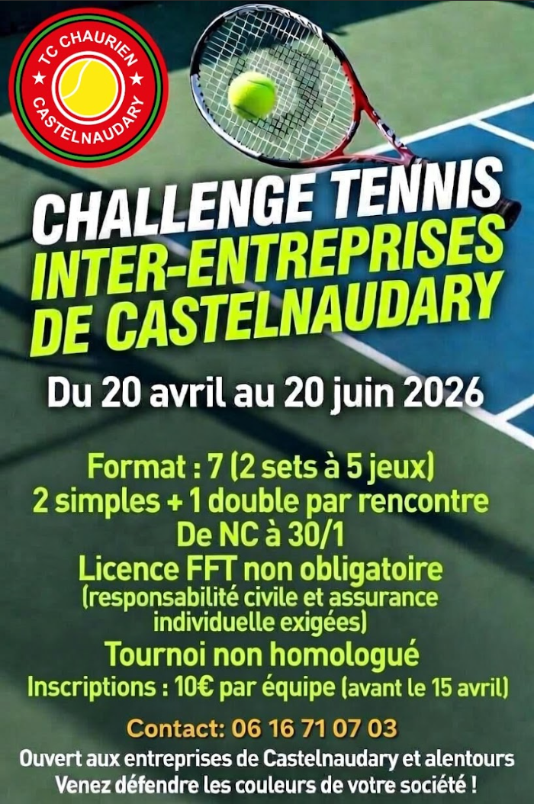
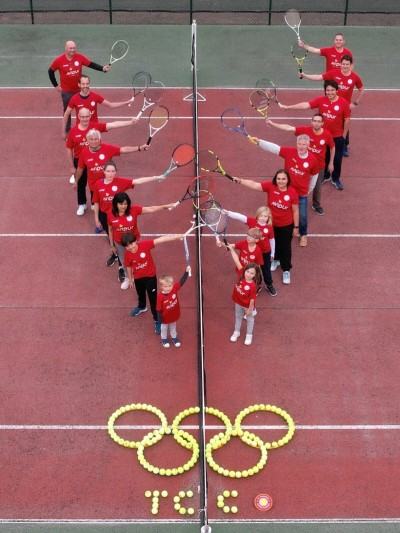
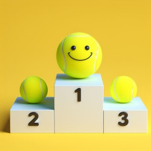

Découvrez notre club de tennis à Castelnaudary !
Quatre terrains avec des éclairages LED dont un couvert ainsi qu'un grand club-house et des vestiaires.
Pour tous les niveaux et tous les âges dispensés de septembre à juin pour apprendre ou perfectionner sa pratique du tennis.
Des animations ont lieu tout au long de l'année afin de réunir les membres du club et le rendre convivial.
Le club dispose de trois terrains extérieurs en béton poreux.
Un nouvel éclairage LED a été installé en 2024.
Ils sont réservables via Tenup de 8h00 à 23h00 pour les membres du club et accessibles via digicode.
Le club dispose également d'un terrain couvert en GreenSet avec un nouvel éclairage LED.
Ce couvert permet d'assurer la majorité des cours lors de mauvais temps.
L'accès et la réservation sont identiques aux terrains extérieurs.
Avec son bar, sa cuisine ou encore son baby-foot, le club-house est parfait pour organiser les soirées du club ou recevoir lors des compétitions de tennis à Castelnaudary.
De plus, il offre une vue directe sur le terrain couvert pour suivre les matchs.
Il a été entièrement rénové il y a peu.

Notre club de tennis est dynamique et convivial. Les membres du club échangent régulièrement sur WhatsApp afin de trouver un partenaire de jeu ou partager les résultats des matchs.
Contactez-nous



Le club organise un tournoi d'hiver et un tournoi d'été attirant de nombreux joueurs de simple et double de Castelnaudary et de toute la région.
Notre fête se déroule le jour précédant le tournoi d'été pendant 24h. Matchs, structures gonflables et repas sont au programme de cette journée festive consacrée au tennis.
Nous avons organisé notre 1er loto en mars 2024 à la Halle aux grains de Castelnaudary. Les bénéfices ont permis de renouveler le matériel de l'école de tennis.
D'autres animations ont lieu tout au long de l'année comme :
Première compétition par équipe de la saison, le club engage une équipe en 3ème série et une équipe en 4ème série.
Quatre équipes sont engagées dans les différentes compétitions interclubs du département.
Compétition par équipe régionale, elle clôture la saison des matchs par équipe. Le club engage trois équipes (Dames et Deux Messieurs).
Le club engage deux équipes dans les différentes catégories d'âges. Première compétition par équipe pour les jeunes chauriens.
Cette compétition clôture la saison des matchs par équipe pour nos jeunes.
Le programme des compétitions du TC Chaurien est accessible depuis Tenup.
Venez nombreux pour encourager les chauriens.
Les résultats sont également disponibles sur Tenup ainsi que sur nos réseaux sociaux Facebook et Instagram.
Ils sont régulièrement publiés dans la Dépêche du Midi dans les pages de Castelnaudary.

Le bureau veille à la bonne gestion du club de tennis, à l'organisation des activités pour tous les membres et la participation aux événements associatifs à Castelnaudary. Il est organisé en plusieurs commissions (Sportive, Communication, Jeune et Animations).

Présidente

Trésorier

Secrétaire